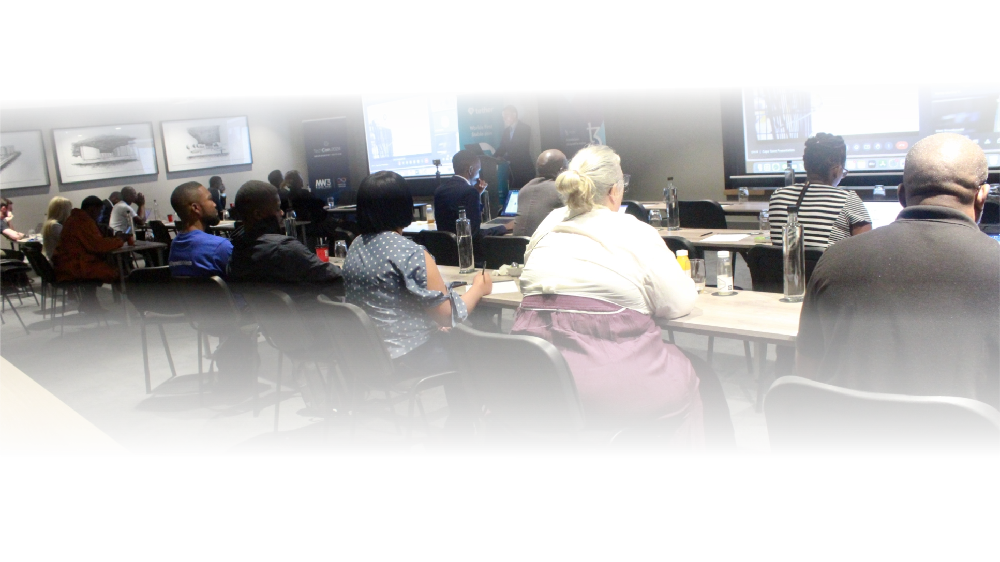

Our History
TechCon has established itself as a premier technology event in Africa, delivering tangible impact through 5 Nations Attended 5 Nations Attended TechCon brought together Digital Transformation Executives and policymakers from five African nations—Democratic Republic of Congo, South Africa, Tanzania, Uganda, and Zambia. Government Collaborations Government Collaborations Helping African governments integrate blockchain and AI for improved governance and public services. Partnerships with Leading Organizations Partnerships with Leading Organizations Collaborating with global tech firms, academic institutions, and industry associations.
